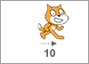

O ator se moverá na direção atual. Digite a que distância que você quer que ele se mova.
Se você digitar um número negativo (como -10), o ator seguirá na direção oposta.Um passo é uma distância bem curta. O palco do Scratch tem 480 passos de largura e 360 passos de altura: